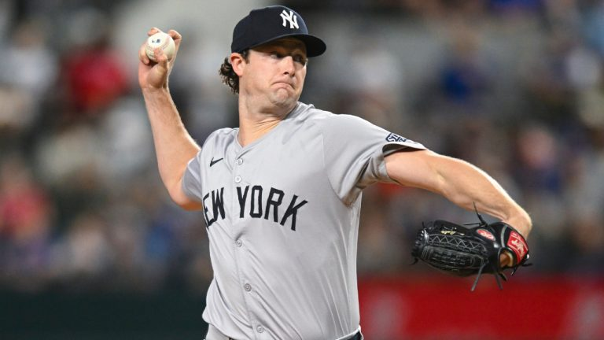
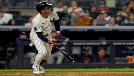

Carlos José Villanueva Ramos
📅 27 de agosto 2026
⚾Aaron Judge apunta a regresar en septiembre sin pasar por Ligas Menores

Retorno directo al primer equipo:
El capitán de los Yankees, Aaron Judge, confía en reintegrarse al roster principal durante el mes de septiembre sin necesidad de hacer una gira de rehabilitación en filiales, asegurando que prefiere aprovechar sus turnos de bateo directamente en las Grandes Ligas.
Evolución favorable:
Tras perderse varios meses por una fractura de costilla sufrida al zambullirse en abril, Judge ha comenzado a intensificar sus entrenamientos, haciendo carreras al aire libre, atrapando elevados y realizando sus primeros swings en jaula bajo techo.
Planes en el jardín derecho: Tanto Judge como el manager Aaron Boone prevén que, una vez recuperado, regrese a defender el jardín derecho con precaución, dejando el puesto de bateador designado libre para alternar a otros jugadores de la plantilla.

Carlos José Villanueva Ramos
📅 28 de agosto 2026
⚾ Yankee de Nueva York vs Red Sox, una rivalidad historica

La rivalidad más añeja de la MLB se acerca, y nos da la idea de que como se aproxima la Serie entre estos dos grandes equipos Boston vs New York, el mundo del béisbol vuelve a poner de nuevo la mirada en ellos.
Ambas escuadras conocen su propio poder deportivo, y también el odio que se extiende hasta a las aficiones .
El 25 de junio, los Medias Rojas no habían ganado una serie completa contra los Yankees.
En ese momento, nadie lo veía posible por dos razones: se suponía que nadie le ganaba a los del Bronx, el equipo con mejor nivel, y Boston apenas venía de menos a más.
Por eso a los Yankees les pusieron el apodo de 'súper Yankees'.
Pero la sorpresa llegó: Boston ganó esa serie y luego también el comodín.
Desde ese encuentro hasta hoy, Boston le ha ganado 5 de 9 juegos a Nueva York.
Eso significa que los Yankees, para tener ventaja de local en un futuro enfrentamiento de playoffs, necesitarían ganar al menos 3 de los 4 juegos que quedan de la serie regular.
Carlos José Villanueva Ramos
📅 28 de agosto 2026
⚾ Astros de Houston derrotan a los Yankees y Cole pierde la buena racha

El 'as' de los Yankees, Gerrit Cole, no pudo mantener su buena racha ante su antiguo equipo, los Houston Astros, Houston fue el protagonista de cortarle esa racha positiva, en la caída de los Yankees 5-1.
Cole llegaba de cinco aperturas consecutivas permitiendo dos carreras o menos, e iba por la sexta.
En su primer enfrentamiento contra Houston desde el tercer partido de la Serie de Campeonato de la Liga Americana de 2022, permitió tres carreras y seis hits, lanzando 59 de 79 lanzamientos dentro de la zona de strike.
Otorgó una base por bolas y ponchó a cinco bateadores.
Cole tiene actualmente un récord de 7-7 con una efectividad de 3.19 en 17 aperturas esta temporada.
Los Yankees venían de anotar 24 carreras en sus últimos 3 encuentros antes de este partido contra Houston, y Cole espera retomar su buena racha en la serie contra los Red Sox.
Carlos José Villanueva Ramos
📅 28 de agosto 2026
⚾ George Lombard Jr y su mala racha de 6 partidos

George Lombard Jr., de 21 años, atraviesa una mala racha.
El jueves 27 de agosto volvió a cometer un error, aunque esta vez no fue determinante en la derrota de los Yankees.
Son fallos que debe corregir.
Lombard se une así a una lista incómoda de jugadores con rachas de errores que afectaron a su equipo, como Mark Lewis en 1992 con Cleveland, o Chick Fewster de los Yankees en 1921.
En su caso, ya lleva 6 juegos consecutivos cometiendo al menos un error.
El martes, falló un lanzamiento en un sencillo de José Altuve que Jazz Chisholm Jr. logró atrapar.
El miércoles, un batazo de Walker a 105.2 mph le pegó en el talón del guante.
Y el jueves, no pudo atrapar un lento bote de Yainer Díaz hacia la izquierda.
Pero también aportó: esa misma noche del jueves conectó uno de los batazos más sonoros de los Yankees, un triple en la sexta entrada que aterrizó en el jardín izquierdo-central ante Steven Okert.
De cara a la serie contra los Red Sox, Lombard se muestra entusiasmado y confía en llegar con otra mentalidad para seguir aportando al equipo.
Carlos José Villanueva Ramos
📅 27 de agosto 2026
⚾Heliot Ramos se estrena como jonronero con los Yankees en apabullante paliza a Boston

Los Yankees de Nueva York aplastaron 16-1 a los Red Sox de Boston, asegurando así la serie de la temporada regular (7-6) que les daría la ventaja de localía en un eventual cruce de postemporada.
El momento más emotivo del encuentro lo protagonizó el jardinero Heliot Ramos, quien conectó un bambinazo de tres carreras para inaugurar su cuenta jonronera vistiendo el uniforme neoyorquino.
El batazo impulsó una ofensiva que terminó desbordándose en la octava entrada con nueve anotaciones, incluyendo un hito histórico de Austin Wells al conectar dos cuadrangulares como emergente en un mismo episodio.
Reacciones y comentarios:
Heliot Ramos: "Fue muy emotivo. Soy una persona emotiva; siempre muestro lo que siento. Me siento muy bien al rendir para este equipo... Todos estaban entusiasmados conmigo, saben que necesitaba esto. Saben lo duro que he estado trabajando." Además agregó: "Se trata simplemente de saber que pertenezco aquí y que puedo hacerlo en las grandes ligas."
Aaron Boone (Mánager): "Pensé que iba a dar una voltereta en tercera base. Sin duda, presentíamos que significaba algo... De eso es capaz, para eso está aquí." Sobre el momento del equipo añadió: "Ya casi es septiembre. ¡Vamos a por ello! Vamos a jugar nuestro mejor béisbol en el momento oportuno."
José Caballero: "De eso somos capaces. Todos lo sabemos aquí. Se trata de que llegue en el momento justo." Sobre Ramos bromeó diciendo que lo han estado "molestando mucho desde que llegó" por haberse "desmayado" de la emoción al correr las bases.
Will Warren (Pitcher ganador): "No me había dado cuenta de que la serie de la temporada completa también se decidía hoy. Eso fue importantísimo."
Carlos José Villanueva Ramos
📅 27 de agosto 2026
⚾ Actualización: Aaron Judge intensifica su recuperación y viajará a la Costa Oeste con el equipo
El capitán de los Yankees, Aaron Judge, dio un paso clave en su proceso de rehabilitación tras sufrir una fractura de costilla a finales de abril.
Judge acompañará a la plantilla en su gira por la Costa Oeste para medirse a los Angels y Padres, viaje que aprovechará para elevar la intensidad de sus entrenamientos, realizar carreras, atrapar batazos e incrementar la práctica de bateo.
Aunque no se prevé su activación inmediata durante la gira, la directiva no descarta su regreso para las series en casa a mediados de septiembre.
Reacciones y comentarios:
Aaron Judge: "Siento que si les digo que estoy listo para jugar, creo que todos estamos listos para jugar.
No soy lanzador, soy jugador de posición.
Puedo practicar aquí en la jaula... no creo que vaya a haber mucha competencia." Sobre la inactividad comentó: "Lo más difícil ha sido estar inactivo.
Nos estamos recuperando.
Ahora se trata de aumentar el volumen de entrenamientos."
Aaron Boone: "Estoy seguro de que se intensificará y será mucho más complejo... Espero que allí empiece a recuperar la velocidad y cosas así.
Participará en los entrenamientos previos al partido y se pondrá más a punto para su regreso."